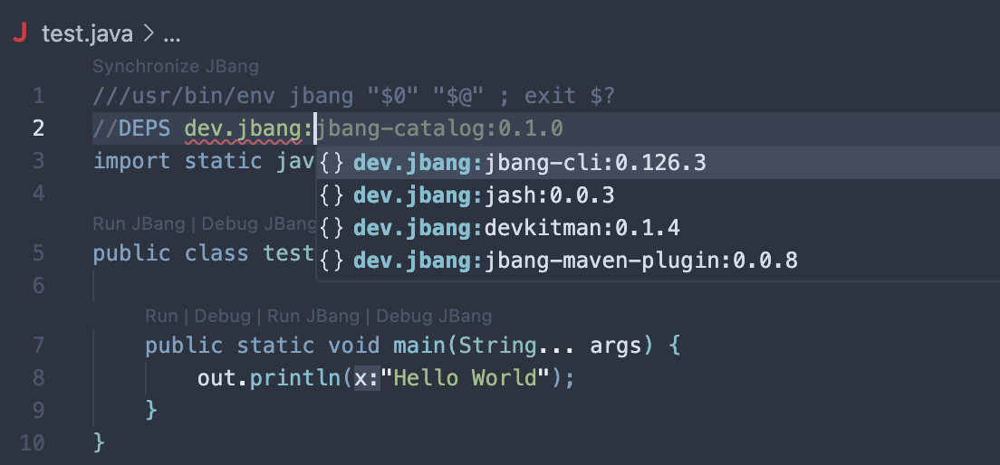

Getting Started
The JBang VS Code extension brings the power and convenience of JBang scripts to Visual Studio Code, with rich editing, completion, and project management features for Java scripts.

Features
-
JBang Script Project Support: Open a folder with JBang scripts to automatically configure classpaths and project structure.
-
Directive Snippets & Completion: Autocomplete for JBang directives like
//DEPS,//SOURCES,//FILES, and more. -
Dependency Completion: Smart suggestions for Maven coordinates in
//DEPS, including group, artifact, and version. -
Hover Documentation: See dependency documentation and details on hover and completion.
-
Run & Debug: Run or debug JBang scripts directly from the editor using codelens or context menu.
-
Synchronize with Build Tools: Sync JBang dependencies with Maven/Gradle projects.
-
Script Templates: Create new scripts from templates with the
JBang: Create a new scriptcommand. -
Annotation Processor Support: Automatically configures annotation processors for your scripts.
-
Install as Application: Install scripts as command-line applications.
-
JBang Catalogs: Autocomplete for
jbang-catalog.jsonfiles.
Getting Started
-
Install Prerequisites
-
JBang (add to your PATH or set
jbang.homein VS Code settings)
-
-
Install the Extension
-
Search for "JBang" in the VS Code Marketplace and install.
-
-
Open or Create a JBang Script
-
Open a folder with
.javascripts containing JBang directives (e.g.,//DEPS). -
Use the command palette (
Cmd+Shift+P) and runJBang: Create a new scriptto start from a template.
-
-
Edit, Run, and Debug
-
Use autocompletion for dependencies and directives.
-
Run or debug scripts via codelens above the main method or type declaration, or right-click for more options.
-
Preferences
-
jbang.home: Path to JBang installation (if not in PATH) -
jbang.wizard.templates.showDescriptions: Show template descriptions in the script wizard -
java.import.jbang.projectPerScript: Import each script as its own project (requires workspace clean to take effect) -
jbang.completion.onSelect.autosave: Auto-save after selecting a dependency completion
Troubleshooting
-
If classpath or completions do not update, try running
Java: Clean Java Language Server Workspaceand reload the window. -
For issues with
build.jbang, manual synchronization may be required.